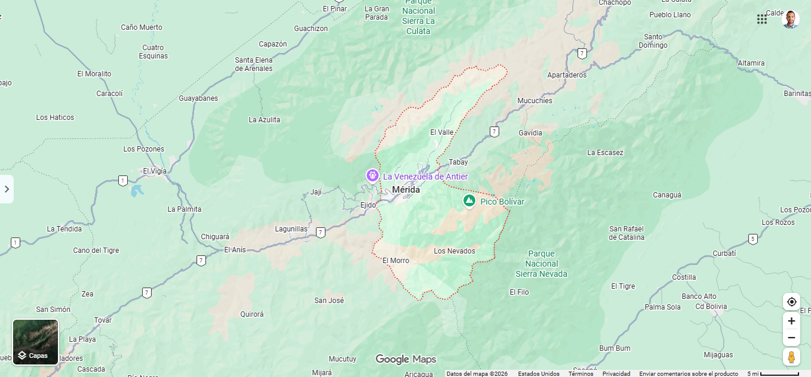

El MUNICIPIO es la división local con alcalde. Es más grande que una parroquia y contiene la ciudad de Mérida.
La capital del estado Mérida es el Municipio Libertador. Está dividido en parroquias.
En el mapa: identifica el municipio, marca un hito y nombra parroquias vecinas.
Al sureste limita con el estado Barinas.
1. ¿Qué nivel es el Municipio Libertador?
2. ¿Quién gobierna un municipio?
3. Parroquia Montalbán está al… del centro
4. Hito cerca del municipio:
5. La ULA es una…
6. En el mapa, módulos del municipio: ______
7. Parroquia El Centro está cerca de…
8. ¿Barinas es vecino al sureste?
9. Un municipio se divide en…
10. Gonzalo Picón Febres es una…
11. ¿El municipio incluye la ciudad de Mérida?
12. Jacinto Plaza es una parroquia…
